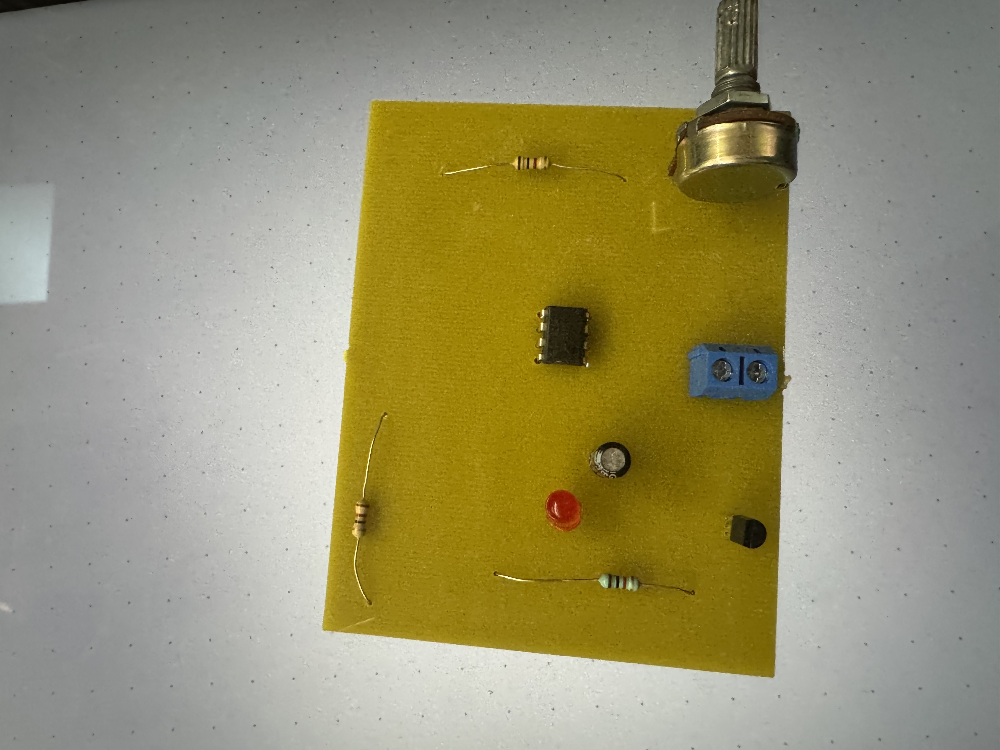
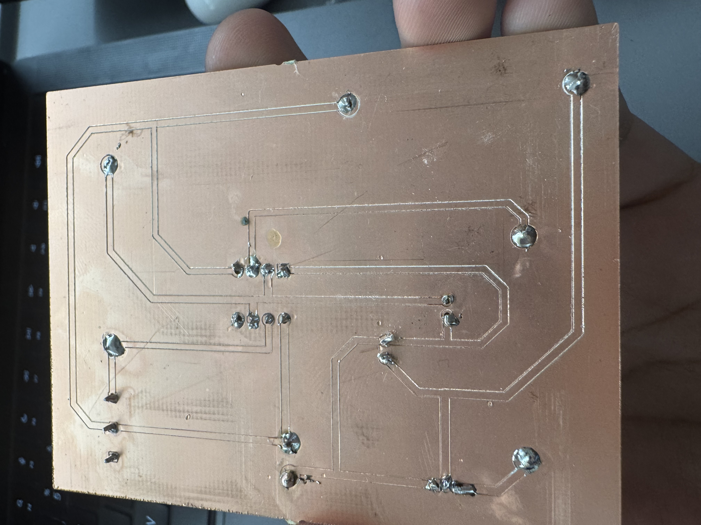
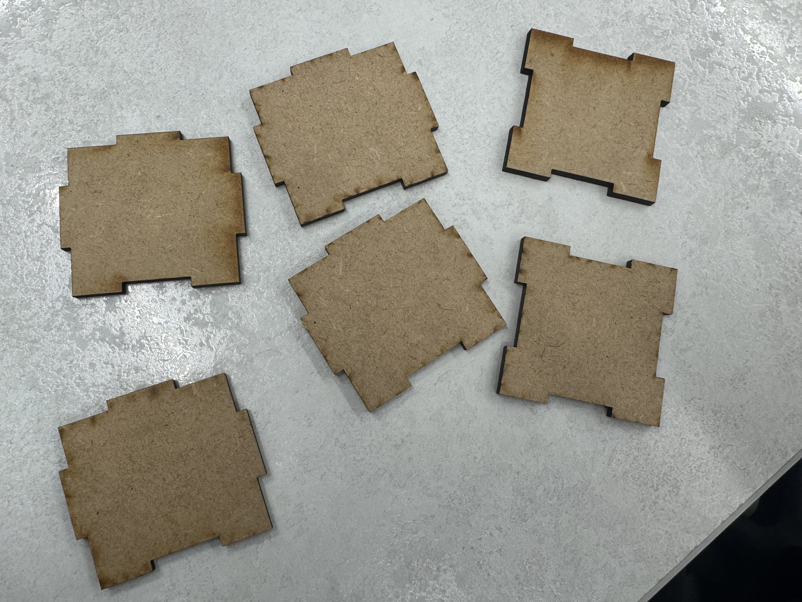

Diseño paramétrico de un móvil utilizando **Tinkercad**. El modelo fue optimizado para su impresión en una impresora 3D de filamento **PVC**, explorando la relación entre software de diseño y fabricación aditiva.
Diseño de un circuito regulador de intensidad para un LED, implementado en una placa de circuito impreso. El proceso incluyó la simulación del circuito en **Tinkercad Circuits** y el diseño de la placa en **EasyEDA**, seguido por el fresado y soldado de componentes.

Vista superior del PCB con componentes soldados.

Vista inferior de las pistas de cobre diseñadas en EasyEDA y fresadas.
Proyecto de **fabricación digital** que involucró el diseño paramétrico de un cubo con uniones tipo dedo (finger joint) usando **Tinkercad**. El archivo vectorial fue optimizado y cortado con precisión en una máquina de corte láser sobre material **MDF**.

Las seis caras del cubo, cortadas con precisión para ensamblaje sin adhesivos.